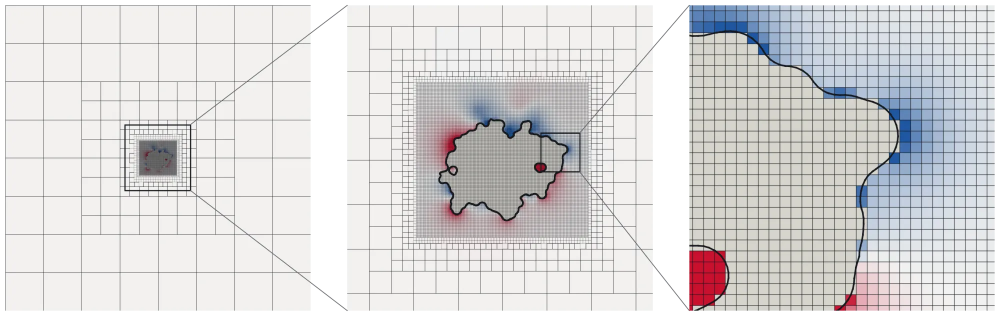
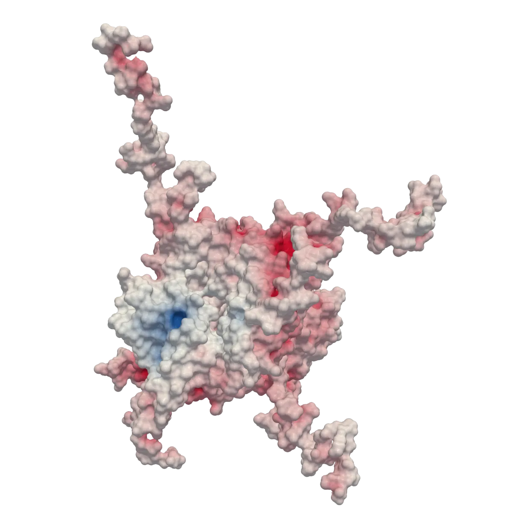
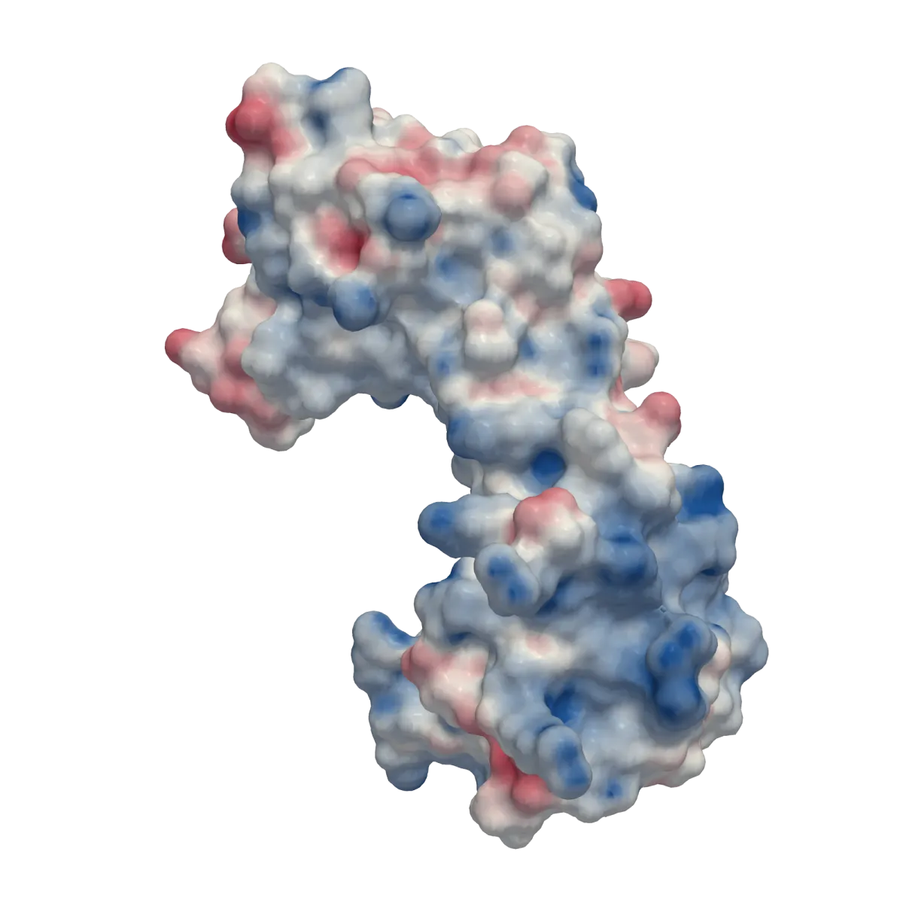

Fine only where it matters
NextGenPB meshes a molecule this way: big cells far away, small cells only along the surface, where the physics changes. Here the surface is my name. Move the pointer, or drag a finger, to refine the grid where you look.

- NowMOX, Politecnico di Milano, since 2025
- Ph.D.Politecnico di Torino and IIT, 2021–2025
- Reachvincenzo.diflorio@polimi.it
About
 Vincenzo Di Florio is a physicist turned computational scientist. He turns the language of physics into algorithms that work on real, messy problems, from the electrostatics of proteins in salt water to physics-informed neural networks.
Vincenzo Di Florio is a physicist turned computational scientist. He turns the language of physics into algorithms that work on real, messy problems, from the electrostatics of proteins in salt water to physics-informed neural networks.
He wrote NextGenPB, a finite element Poisson–Boltzmann solver, and works on heat conduction and transport far from equilibrium. He is open to collaborations in scientific computing.
Research
Code on GitHub






Papers
Peer-reviewed articles, newest first. Full list on Google Scholar.
2026 · 2 papers
- Computing nonequilibrium transport from short-time transients: from Lorentz gas to heat conduction in one-dimensional chains
Carbone, Di Florio, Lepri, RondoniJ. Chem. Phys.
- Patch-based ray tracing in NanoShaper boosts molecular surface computation
Mazzeo, Di Florio, Rocchia, DecherchiJ. Chem. Inf. Model.
2025 · 1 paper
- NextGenPB: an analytically-enabled super resolution tool for solving the Poisson–Boltzmann equation featuring local (de)refinement
Di Florio, Ansalone, Siryk, Decherchi, De Falco, RocchiaComput. Phys. Commun.
2024 · 2 papers
- Microscopic state equation for oscillator chains
Di Florio, Giberti, Rondoni, ZhaoEur. Phys. J. Plus
- Probability turns material: the Boltzmann equation
Rondoni, Di FlorioEntropy
Contact
- MOX, Politecnico di Milano
- Piazza Leonardo da Vinci 32
- 20133 Milano
- Write→